STMB-cave STMB洞穴
概要
STMB-caveはTSDを作る技です．平衡の技法の考え方に近いです．
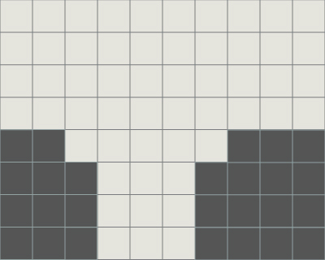 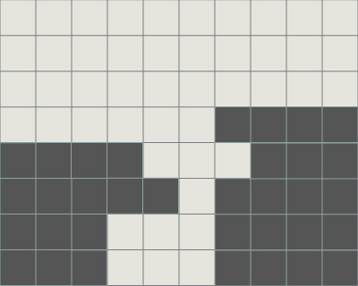 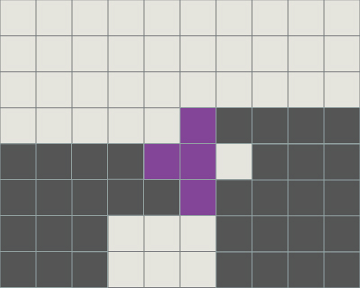 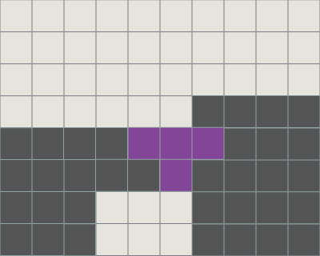 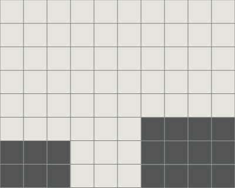
妥協
窪地のすぐ下が埋まっている場合はLJスピンで解消できます．
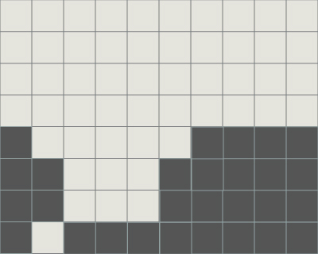 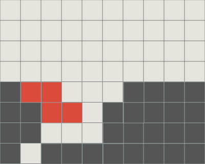 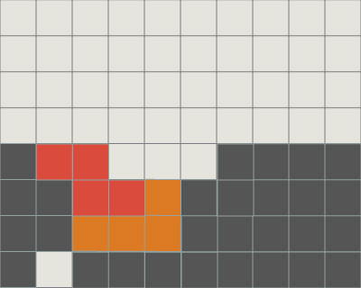
派生系
WC鋤の刃のように使うことが可能です．
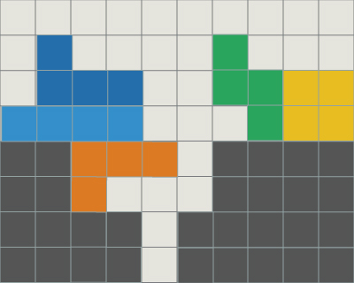 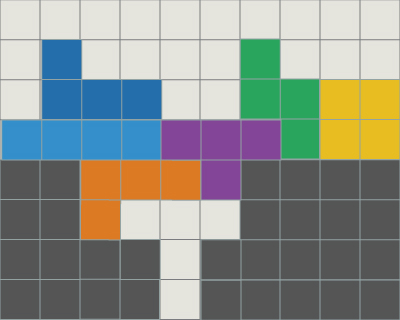 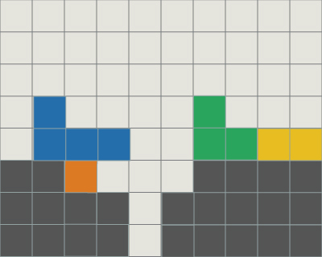
途中
STMB-caveは3*2の窪地で可能です．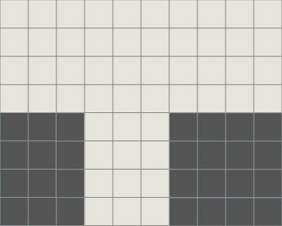 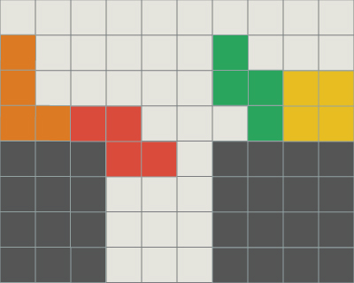
高さが合っていなくても，ミノによっては可能です．
 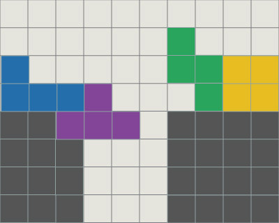
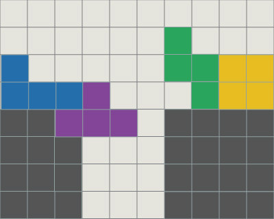 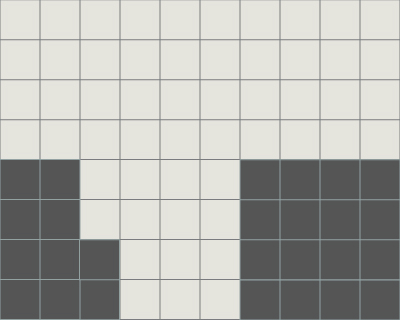 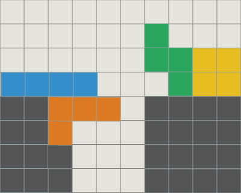
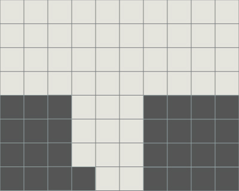 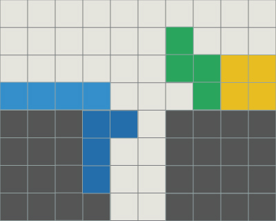
また，TSD地形でSTMB-caveを実行すると連続してTSDを狙えます．
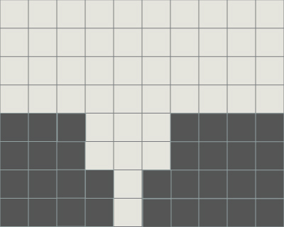 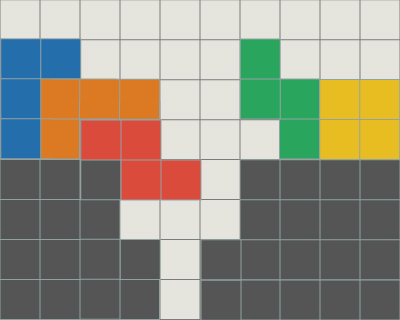 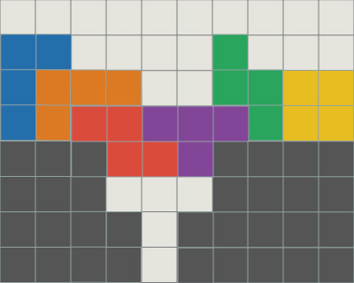 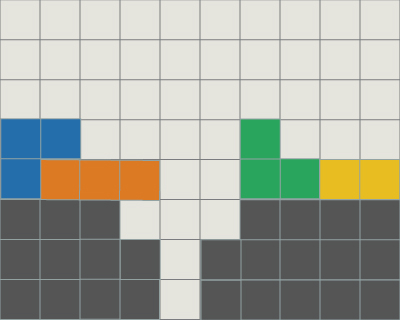
打後
屋根はTSD地形を作るために引っ掛けたミノと反対側につくりましょう．屋根の位置に注意すればTSD後も地形は保たれたままです．